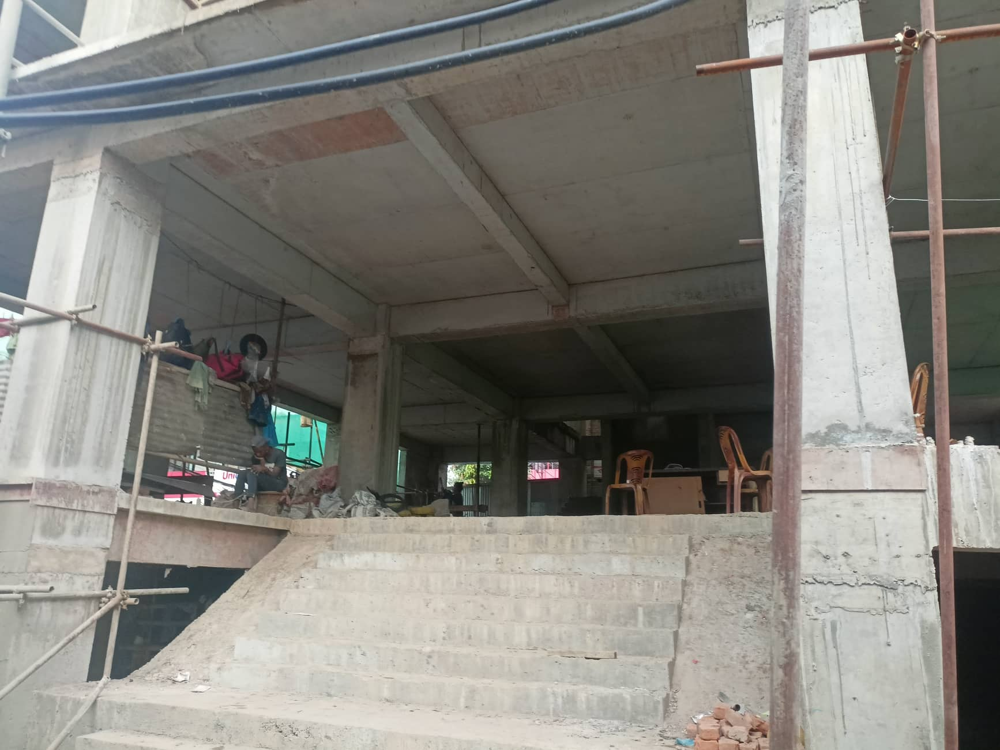
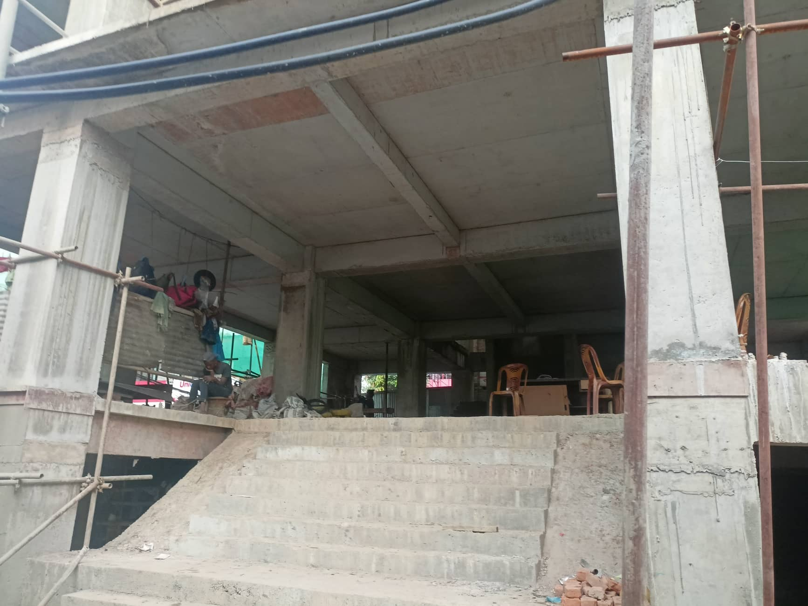

Project Overview
As part of our university project, I conducted the seismic analysis and structural design of a multi-storeyed commercial building using the Nepal Building Code (NBC) 105_2020. The goal was to assess the structural safety of the building under seismic conditions and design the key structural components according to the latest seismic codes.
Responsibilities and Contributions
- Team Collaboration: Worked alongside groups, each focusing on different aspects of the design and analysis process. I took the lead on the seismic analysis, coordinating with the team to ensure that each design component adhered to the code requirements.
- Seismic Analysis: Using the NBC 105_2020, we evaluated the building's seismic performance, including load distribution and the response of structural elements to seismic forces. We conducted dynamic analysis using software like SAFE Pro and ETABS.
- Structural Design: Designed structural components, including beams, columns, and the foundation system, ensuring they complied with guidelines.
- Code Application: Applied the NBC 105_2020 provisions to ensure compliance with seismic zoning and earthquake-resistant measures.
- Report Preparation and Presentation: Compiled a final project report and presented our findings, detailing the analysis, calculations, and design solutions to the faculty.
Tools and Software Used
- ETABS: Used for dynamic analysis of the multi-storeyed structure under seismic loads.
- AutoCAD: For drafting the design elements, ensuring compliance with seismic design specifications.
- MS Excel: For performing manual calculations and organizing seismic load data.
Key Challenges
- Understanding and Implementing NBC 105_2020: Adhering to the code's specific provisions was a complex task, requiring a strong understanding of seismic design principles.
- Seismic Load Calculation: Determining appropriate seismic loads for different building components required careful consideration of local seismic zone data.
- Team Coordination: Managing a team of classmates with diverse roles required excellent coordination to ensure that each part of the design process was accurate and aligned with the project goals.
Outcomes and Results
The project successfully designed a building capable of withstanding seismic forces in compliance with the latest NBC 105_2020 guidelines. We developed a comprehensive report and design documentation that was well-received by the professors and demonstrated our understanding of seismic engineering and building codes.
Project Media
Below are images related to the project:

 
